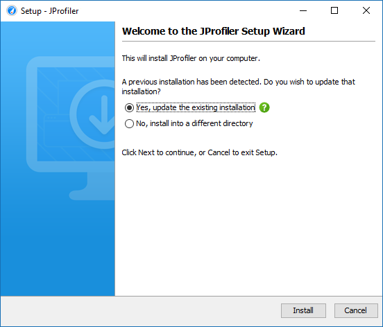
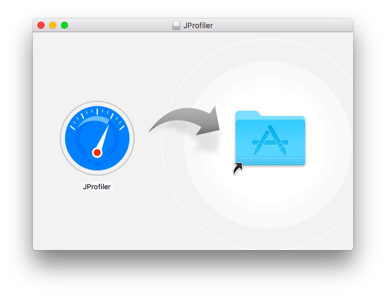
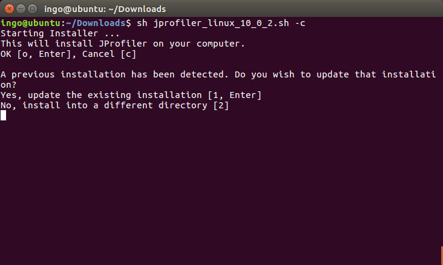
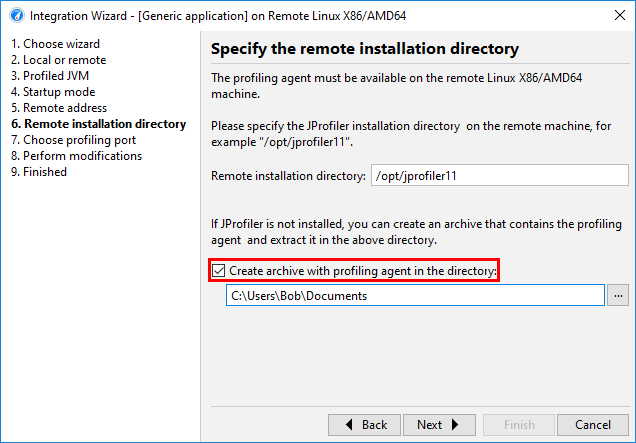

Executable installers are provided for Windows and Linux/Unix that lead you step-by step through the installation. If a previous installation is detected, the installation is streamlined.

On macOS, JProfiler uses the standard installation
procedure for UI applications: a DMG archive is provided that you can mount in the Finder by double-clicking on it,
then you can drag the JProfiler application bundle to the /Applications folder. That folder
is visible as a symbolic link in the DMG itself.

On Linux/Unix, installers are not executable after download, so you have to prepend sh when
executing them. The installer performs a command line installation if you pass the parameter -c.
Completely unattended installations for Windows and Linux/Unix are performed with the parameter -q.
In that case, you can pass the additional argument -dir <directory> in order
to choose the installation directory.

After you run an installer, it will save a file .install4j/response.varfile that contains all
user input. You can take that file and use it to automate unattended installations by passing the argument
-varfile <path to response.varfile> on the command line.
To set licensing information for unattended installations, pass
-Vjprofiler.licenseKey=<license key> -Vjprofiler.licenseName=<user name> and optionally
-Vjprofiler.licenseCompany=<company name> as command line arguments.
If you have a floating license, use FLOAT:<server name or IP address> instead of the
license key.
Archives are also provided as ZIP files for Windows and as .tar.gz files for Linux. The command
tar xzvf filename.tar.gz
will extract a .tar.gz archive into a separate top-level directory.
To start JProfiler, execute bin/jprofiler in the extracted directory. On Linux/Unix, the file
jprofiler.desktop can be used to integrate the JProfiler executable into your window manager.
For example, on Ubuntu you can drag the desktop file into the launcher side bar in order to create a permanent
launcher item.
JProfiler has two parts: The desktop UI together with the command line utilities that operate on snapshots on the one hand, and the profiling agent together with the command line utilities that control the profiled JVM on the other hand. The installers and archives that you download from the web site contain both parts.
For remote profiling, however, you only need the profiling agent to be installed on the remote side. While you can simply extract an archive with the JProfiler distribution on the remote machine, you may want to limit the amount of required files, especially when automating a deployment. Also, the profiling agent is freely redistributable, so you can ship it with your application or install it on customer machines for trouble-shooting.
To get a minimal package with the profiling agent, the remote integration wizards offer the option to create such an archive for any of the supported platforms. In the JProfiler GUI, invoke Session->Integration Wizards->New Server/Remote Integration, select the "Remote" option and then the Create archive with profiling agent check box on the Remote installation directory step.

If necessary, JProfiler will download the required native agent libraries together with the
jpenable, jpdump andjpcontroller
executables and create a .tar.gz or .zip archive depending on the target platform.
All the above executables in the archive only require Java 6 as a minimum version, while the profiling agent
works with Java 5 or higher.
The sub-directories that you see after extracting the archive on the remote machine are described below. They are a subset of a full JProfiler installation on the respective target platform.